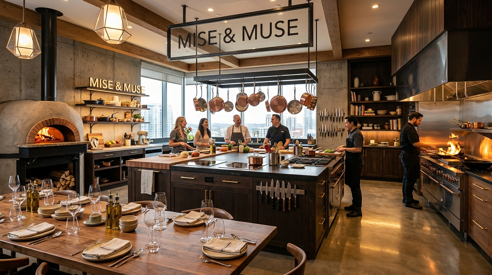
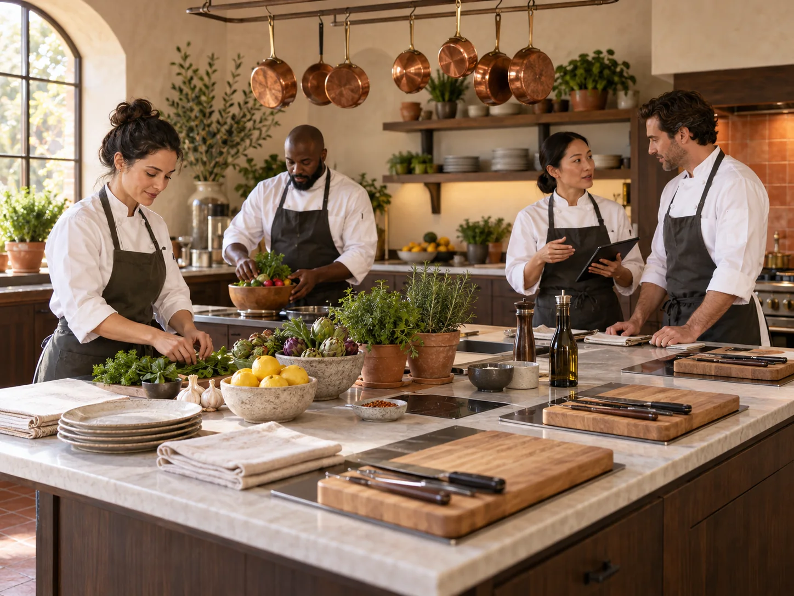
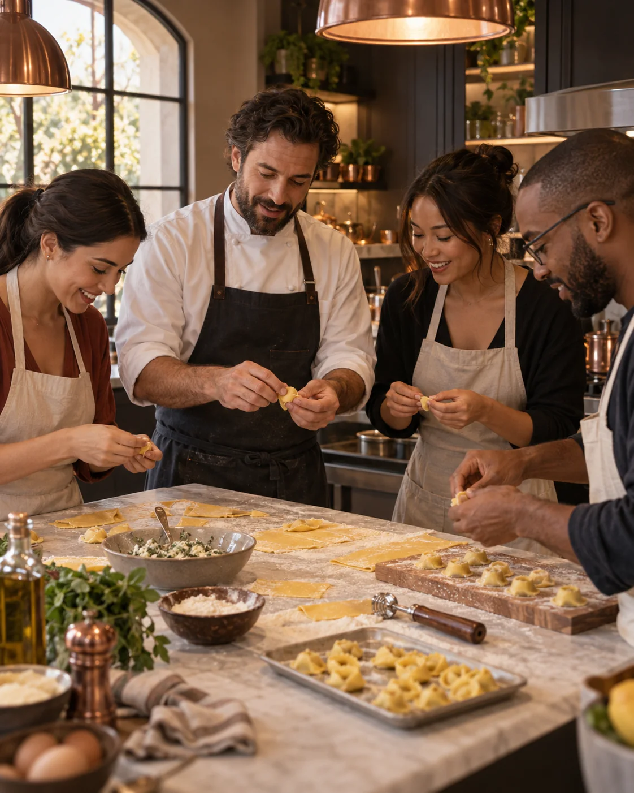
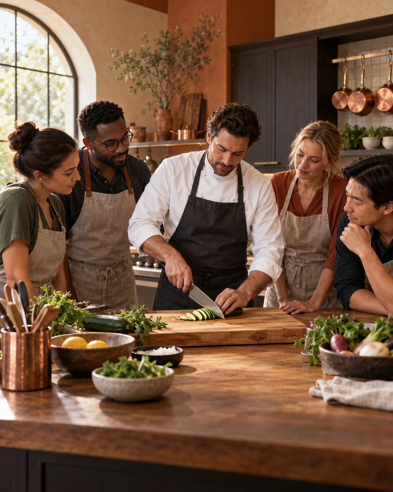
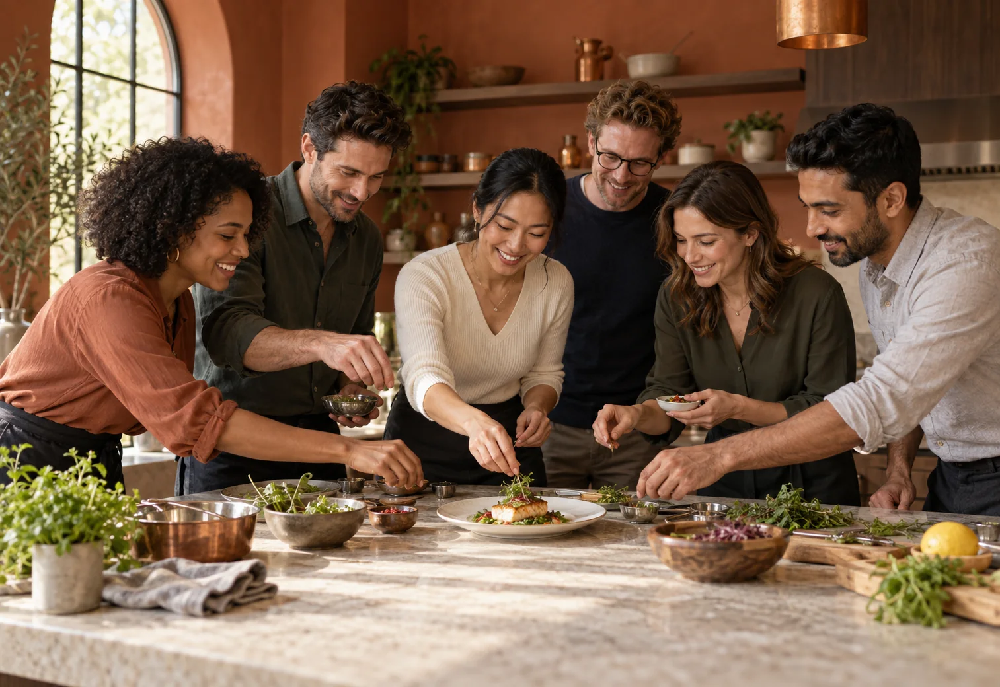
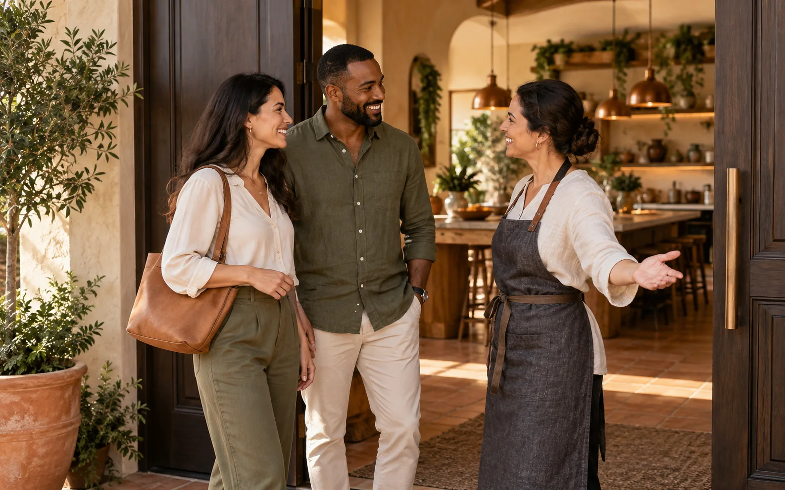

Central TeachingIsland
Clear views atevery station.

Our open-plan atelier keeps every guest close to the ingredients, the chef, and one another—from the first knife cut to the final shared plate.
Clear views atevery station.
Pro tools supportevery technique.
Share mealsaround one table.
The people, techniques, and shared tables that shape every workshop.


Generic cooking academies often make learning feel clinical and rigid, while recipe blogs leave home cooks stranded when dough doesn't rise or sauces separate.
We founded Mise & Muse as a participatory culinary studio where you touch raw ingredients, understand the physical chemistry of emulsions and fermentations, and sit down to celebrate your finished dishes with wine and newfound friends.

A recipe is only a guideline. Humidity changes flour absorption; stove BTU output varies; vinegars have different acidities.
Our chef mentors teach you how to read visual clues, smell the subtle nutty transition of browning butter, feel dough elasticity, and balance seasoning on the fly.

Cooking without gathering is only half the joy. Every workshop culminates at our handcrafted solid walnut table.
Here, aprons are loosened, wines are poured, and the food you prepared is savored together in an intimate, celebratory atmosphere.

Every experience begins with a personal welcome, a prepared workstation, and space to settle into the rhythm of the kitchen.
Our hosts guide every detail—from dietary preferences to introductions—so first-time cooks and seasoned guests feel equally at home.